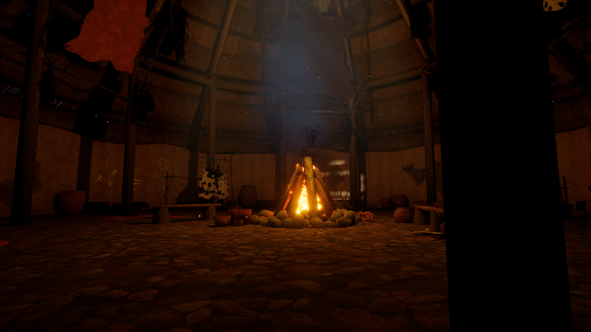

Professional AR Development
Reveal: The Past is a mobile AR experience for exploring heritage sites through reconstructed environments, characters and interactive storytelling. As the sole artist, I create environment art, props, characters, animation, VFX and materials in Unity 6.
Reveal: The Past is a mobile AR experience that interprets heritage through reconstructed environments and interactive storytelling. As the sole artist, I create environments, set dressing, props, characters, animation, VFX and materials in Unity 6. Current work includes internal prototypes for Great Witcombe Roman Villa, Gloucester Cathedral, Brean Down Fort, Chedworth Roman Villa and Crickley Hill; these are not commissioned or live site experiences.
Trailer footage showing the AR experience in development.
Internal prototypes exploring how reconstructed environments and interactive elements can support heritage interpretation.
The production pipeline behind the environments, assets and real-time AR experiences.
I reconstruct and dress environments around each location's architecture and historical context. Composition, asset placement and environmental detail create convincing spaces while supporting the visitor experience.
I adapt third-party assets, including packs from Leartes Studio and Synty Studios, for mobile AR by adjusting models, materials, textures and shaders to meet performance requirements. I also match their visual styles where needed to keep each experience cohesive.

I created and optimised Unity Shader Graph materials for mobile AR, including wind, dissolve and baked lighting effects. For assets, I use ORM (ambient occlusion, roughness and metallic) maps with custom shaders to control material response and balance visual quality with runtime performance.
I create VFX that support the AR experience while meeting mobile performance constraints. For the Reveal logo, I generated a signed distance field (SDF) from the model and used it to shape particles, combining VFX Graph with a custom dissolve shader.
I create historically informed characters and bespoke clothing in Character Creator 4, then develop animations in iClone 8 and Blender for AR interactions. I prepare characters for real-time lip-sync, test text-to-speech options and use a custom test script to tune viseme timing before handing assets and findings to the development team.
Additional skills that support the environment art and prototype development.
I design experiences around how visitors move through and interact with each site. Environment layout, character encounters and interactive storytelling guide discovery without relying solely on exposition.
I assess potential heritage sites for AR suitability, considering historical significance, visitor experience, technical feasibility and sustainability. This research has informed internal pitches for future locations.